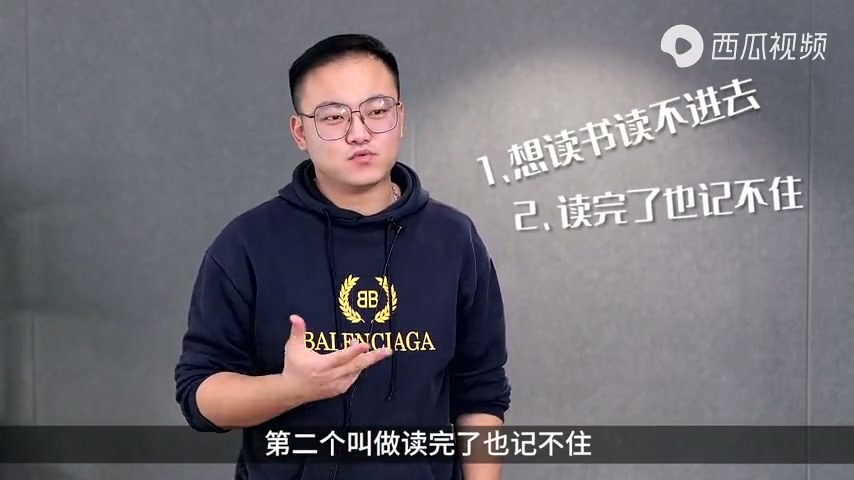
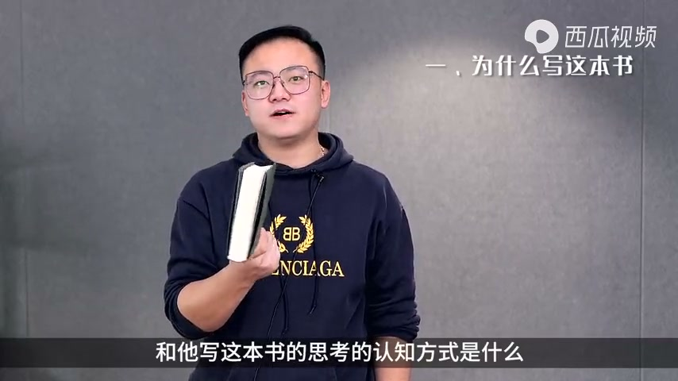
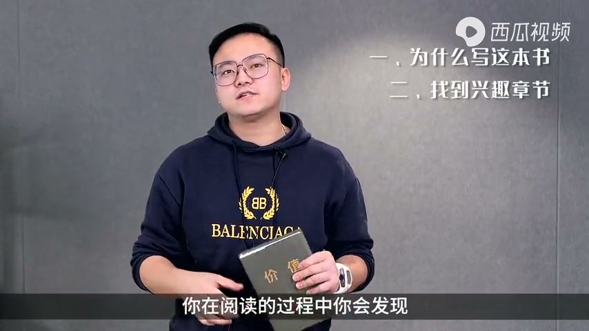
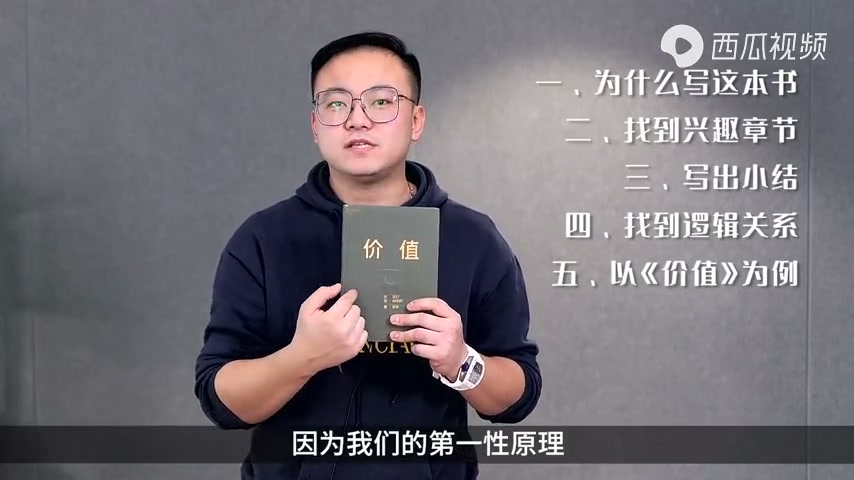
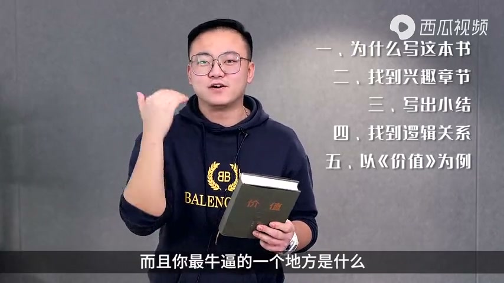

内容要点
一份 4 分半的「读书方法」分享，送给所有想在新一年成长的人。讲者提出读书要解决三个问题：想读书读不进去、读完了记不住、记住了做不到。他的解法是：读一本书前先想明白作者为什么写这本书、他的思考认知方式是什么；翻开目录挑一个最感兴趣且能看懂的章节从头精读，用「讲了什么事、用什么佐证、如何思考」三行记录；遇到不懂的观点，回到书里找前后呼应来理解。他以读了三遍的《价值》为例，指出全书反复讲「长期主义」，其本质是第一性原理——每个事情都能倒到一个唯一的原因，这个原因决定了事情的走向。读懂底层逻辑后再快读其他章节，一本书就能「通透到爆炸」，背下来。
知识结构
读不进去、记不住、做不到——这份「礼物」就是教读书方法，解决这三个问题。
一本书最重要的是知道作者为什么写、用什么认知方式思考；就像读鲁迅散文要先懂中心思想，否则每句话都像普通文章。
打开目录挑一个能看懂且最感兴趣的章节精读，用「讲了什么事、用什么佐证、如何思考」三行记录，不懂的观点回书里找前后呼应。
《价值》全书强调长期主义，本质是第一性原理——每个事情都能倒到一个唯一的原因；加入或离开公司、要不要投资爱奇艺，都可以用它判断。
详读两三章后底层逻辑就出来了，再快读其余章节；只要记住每个认知下的一个关键点，整本书的脉络就能成型。
读书的核心不是从头读到尾，而是先抓住作者的思考框架：从兴趣章节精读入手，用「事、证、思」三行记录法吸收，再上升到第一性原理看穿整本书的底层逻辑，最后快读全书——读得进、记得住、用得上。
00:00-00:27一份礼物：解决读书的三个问题
开场讲者把视频当作一份大礼送给观众：可以下载下来分享给身边所有人——正在读书的、喜欢读书的、不喜欢读书的、各类想在新一年成长的人。
这份礼物简单来说就是教你读书的方法，解决三个问题：第一个是想读书读不进去，第二个是读完了也记不住，第三个是记住了也做不到。那么怎样才能解决这三个问题、提升读书能力呢？

00:28-01:17先懂作者：一本书最重要的入口
讲者用一个问题切入：假如我们拿到一本书，第一件事是干什么？他说一本书最重要的，是你知道作者为什么要写这本书，以及他写这本书的思考认知方式是什么。
如果想不明白这个，你每一段都是「此经未下」——因为一个好的作者，书中每一章基本上都是内卷到一个核心底子里的。他举了小时候读鲁迅作文和散文的例子：如果你不知道鲁迅写这篇散文时的中心思想，每句话都觉得不过是一篇普通文章；但放在那个环境和认知里，你才知道原来他在影射这个、影射那个。
讲者感叹：其实我们语文学了 12 年，老师教给我们的就是这个能力，只是大部分人没有真正学会。

01:17-02:18精读一章：三行记录法
讲者分享自己的读书方法：先打开目录，从中挑选一张觉得能看明白且最感兴趣的章节，翻到那个章节从头到尾精细化阅读。
阅读过程中你会发现，作者可能产出观点、分享一些事实或现象，然后通过现象用他的认知帮你分析本质，还可能给你一些方法，甚至说出自己的信仰和态度。
所以针对这一章，就记录三行：第一，他讲了个什么事；第二，他用什么具体的事例来佐证；第三，他是如何思考这件事的。把这三行记下来，这个小节就写完了。
如果里面有些观点和逻辑不太明白，就从这个观点在书中找一些答案——他肯定有些观点是跟前前后后呼应的，此时再从前呼后应的角度去看这两个观点，你会感觉到这本书是立体的，呈现的是同一件事的底层逻辑。

02:18-03:47案例：《价值》与第一性原理
讲者用《价值》这本书举例：他通读过三遍，从里面得到的最重要一句话是——我们每个人都在说，要长期主义才有价值，要跟人保持长期关系才有价值，要终身学习才有价值；但我们都忘了，我们之所以能够长期和终身，是因为我们的第一性原理。
第一性原理什么意思？查过解释后他总结：叫每一个事情都能往前倒，倒到一个唯一的原因，这个原因会决定我们这个事情的长短、结果和过程。
他举了最简单的例子：你当初加入一家公司，是因为这个老板、还是因为工资、还是因为这个公司的未来加入的——这个起因和你离开的原因是一致的。又比如前两天有朋友要投资爱奇艺，他说会员不会增长了、广告投放那么多，投它干什么；朋友回答因为爱奇艺即将成为一家内容制造商。这就是他的思考。
什么时候买很简单：第一种方式，这事干成了；第二种方式，他换方向了。如果你都不知道你为什么投他，你怎么可能长期拿着？所以他加入一家公司是因为公司要上市、要完成结构性的变化，离开的方式也只有两个原因：上市了，或者没有完成这个行业的颠覆。
所以《价值》里一直在讲长期，但它最本质的是看透第一性原理，由它去考虑是否结束。带着这个思考再看这本书，就通透到爆炸：每个认知都会让你想——原来这就是团队管理，原来这就是价值投资，原来这就是终身学习。

03:47-04:35快读：底层逻辑打通全书
讲者总结：当你把最好的那一章结合第一性原理读完，再接着读第二章、第三章，只要详读三章，这本书的底层逻辑就出来了。
带着这层底层逻辑再读每一章，就是快读——快读的过程中你就知道，哦，他的逻辑是这样。
而且最厉害的是，这本书你背下来了：因为这个认知下面的每一层逻辑，你只要记住一个关键点，它整个脉络就全部成型。这就是读书的技巧。
最后他预告：今天教完读书的能力，还会带大家读六本书，同时把读书的模板笔记送给大家，从此之后你会爱上读书、记住每个关键点，并在生命中运用书中的知识去创造自己的未来。

完整转录（152段）
以下文本由 Whisper medium 模型自动转录，可能存在少量识别误差，已尽可能修正。
连接送给大家一份大礼
就是你可以把这段视频下载下来
分享给你身边所有的人
包括正在读书
喜欢读书
不喜欢读书
各类的新一年想成长
想变得更好人
那这份礼物
简单来讲就是告诉你读书的方法
解决三个问题
第一个叫做想读书读不进去
第二个叫做读完了也记不住
第三个叫记住了也做不到
那怎么样才能解决这三个问题
来提升我们的读书能力呢
首先第一点我们举个例子
假如我们拿到一本书
你第一件事是干什么
你知道一本书最重要的
是你知道作者为什么要写这本书
和他写这本书的思考的认知方式是什么
如果你想不明白这个
你每一段都是此经未下
因为一个好的作者和一个真正传舍书
辩证统一
格物之之
大道之间
每一章节基本上都是内卷到一个核心底的
所以你看我们小时候
经常会读杜迅的作文和散文
你会发现如果你不能知道
杜迅写这个散文时候的中心思想是什么
每句话都感觉这不都是一篇普通的文章吗
但是因为放在那个环境和认知里面
你知道哦原来他在影射这个
原来他在影射那个
所以这个就是我们读书的思考
其实我们语文学了12年
老师就在教给我们这个能力
不过我们大部分都没有
怎么做呢
实际上讲我读书的方法
我先会打开目录
我要从目录中挑选一张
我觉得我能看明白
且最感兴趣的一个章节
翻到那个章节
然后从头到尾精细化的阅读
你在阅读的过程中
你会发现他有产出观点
他可能会分享一些事实或者现象
然后通过这些现象
利用他的认知去帮你分析本质
他还有可能给你一些方法
他还有可能再说出自己的信仰和态度
所以对于这张题而言
你就改个列三行
第一个他讲了个什么事
第二个他具象当中一件事上来佐证他
第三个他是如何思考这件事的
当你把这三个记下来之后
好你这个小节就写完了
这里面可能说的一些观点和一些逻辑
你不太明白
你再从这个观点在这个书中找一些答案
你放心
他肯定有些观点是跟前后呼应的
此时你再从前后呼应的角度
再去看这两个观点
此时你就会感觉到
这本书是个立体的呈现的一面前
在这件事情上的底层逻辑
和这件事情底层逻辑一致了
所以你看咱拿价值这本书举例子
我通读过这本书三遍
我从里面得到的一句最重要的话
这句话是什么呢
叫我们每个人都在说
我们要长期主义才有价值
我们要跟人保持长期关系才能有价值
我们要终身学习才能有价值
但是我们忘记了
我们之所以能够长期和终身
因为我们的第一性原理
好我不会啊
第一性原理什么意思
我就开始查
第一性原理的解释是什么
叫每一个事情都能往前倒
倒到一个唯一的原因
这个原因会决定我们这个事情的
长短结果和过程
我给你举个最简单的例子
你当初加入一家公司
你现在思考
你是因为这个老板加入的
你是因为工资加入的
你是因为这个公司的未来加入的
这个起因和你离开的原因是一致的
你看前两天有朋友要投资爱奇艺
我说你为什么要投资爱奇艺
你看会员不会增长了
广告投放每天那么多
你投资爱奇艺干什么
他说爱奇艺即将成为一家内容制造商
你看这是他的思考
他就买进去了
我跟你讲什么时候买很简单
第一种方式这事干成了
第二种方式他换方向了
你都不知道你为什么投他
你怎么可能长期拿著
我加入一家公司
为什么因为他要上市
他要完成一个什么结构性的变化
我离开的方式有两个原因
第一个他上市了
第二个他没有完成这个行业的颠覆
所以价值里面一直在讲长期长期长期
但他最本质的是什么
是看透第一性原理
由他去考虑是否结束
所以你再带著这个思考
再看这本书
通透到爆炸
你每一个认知
你都会思考他的第一性原理是
哦原来这就是团队管
原来这就是价值投资
原来这就是精神学习
所以你当你最好的一章结
再列表到第二章第三章
你只要详读三章
他的底层逻辑就出来了
你带著这层底层逻辑
再去读每一章就叫快读
快读的过程中你就知道
哦他的逻辑是这样
而且你最牛逼的一个地方是什么
这本书你背下来了
因为这个认知下面的每一层逻辑
你只要一个key point
他整个脉络全部成型
所以这就是读书的技巧
当然今天教完大家读书的能力
我再带著大家读六本书
同时把读书的模板笔记给了大家
从此之后你将会爱上读书
你将会记住每个关键
你将会在生命中运用书本中的知识
去创造你自己的未来